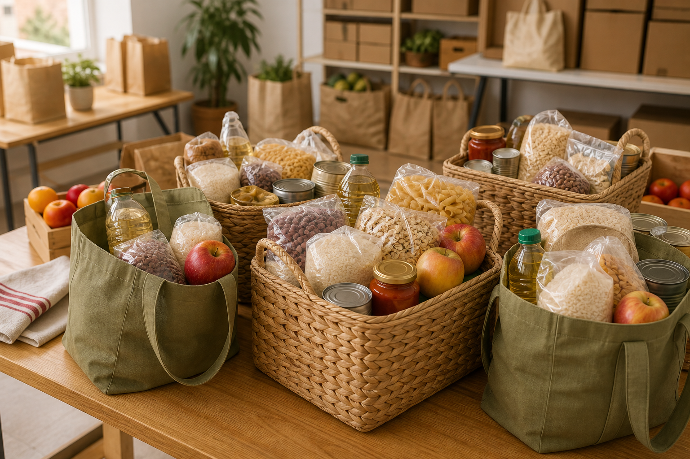

Projeto Caridade
Pequenos gestos fazem a diferença.
Conectamos pessoas que desejam ajudar a quem precisa de apoio. Faça uma doação ou conheça outras formas de participar.
Todo gesto tem lugar
Qual é a sua forma de ajudar?
Escolha uma possibilidade e descubra o próximo passo. Não precisa ser muito para começar.

Alimento é cuidado
Mais alimento. Mais possibilidades.
Arroz, feijão e outros alimentos não perecíveis podem fazer parte de uma cesta de apoio. Confira a validade e mantenha as embalagens fechadas.
Antes de doar: confira a validade e o estado da embalagem.
Doar alimentos